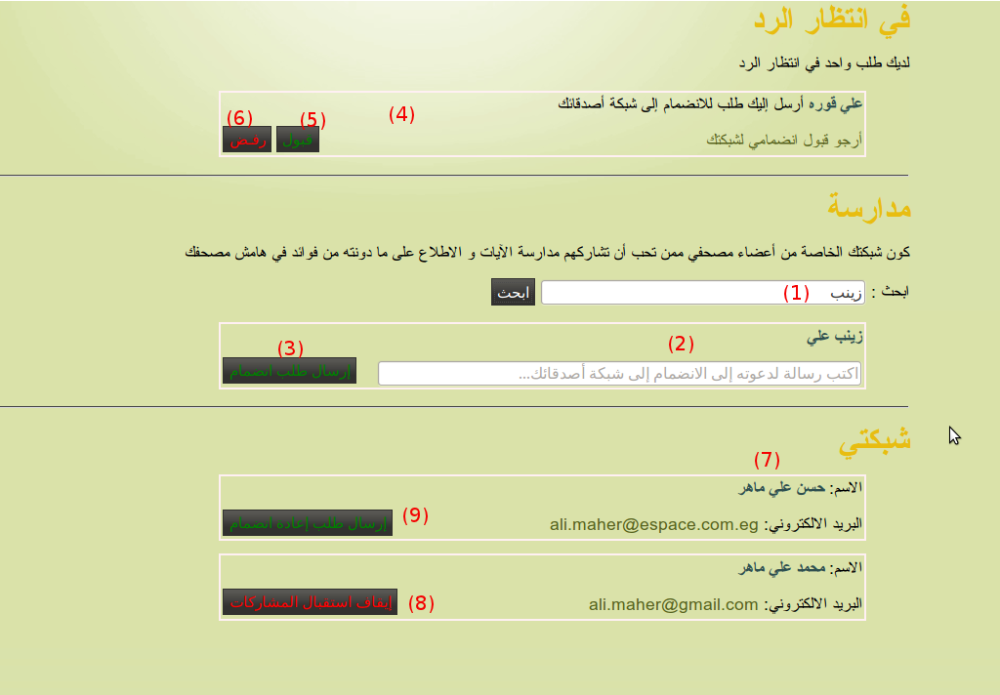
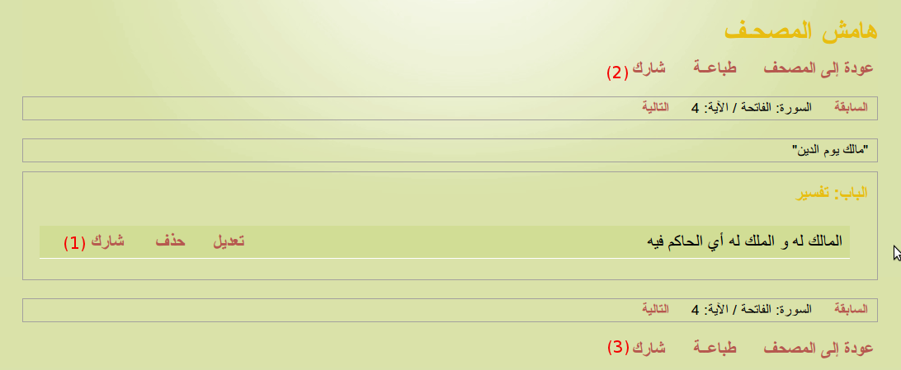
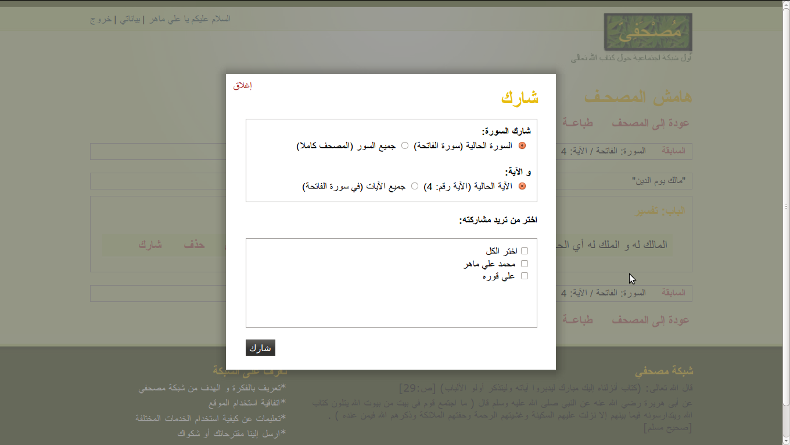

تكوين شبكتك الخاصة
خدمة "مدارسة" تعطي "هامش المصحف" الجانب الاجتماعي و الذي يبدأ بالبحث عن أعضاء شبكة مصحفي لتكوين شبكتك الخاصة كما في الشكل أدناه

- اكتب البريد الالكتروني كاملا أو جزء من اسم العضو الذي تريد البحث عنه في المكان (1).
- ستجد نتائج البحث في المكان (2).
- أرسل طلب انضمام بالضغط على (3).
- لو فرضنا أن أحدا قد أرسل إليك طلب انضمام فإنك سترى قائمة الطلبات في (4).
- بإمكانك قبول الطلب (أي الموافقة أن تكون عضوا في شبكته و يكون عضوا في شبكتك و يكمن لأي منكما مشاركة الآخر بعض أو كل ما في هامشه كما سيأتي لاحقا) بالضغط على (5) أو رفض الطلب بالضغط على (6).
- بعد قبول الطلب يمكنك رؤية كل من ينتمي إلى شبكتك في (7) و يمكنك أن توقف استقبال المشاركات (إيقاف استقبال المشاركات يعني أنك لن تكون في شبكته و لن يكون في شبكتك و بالتالي فلن تستطيعا تبادل أي مشاركات و لن يظهر لك في هامش المصحف) بالضغط على (8)
- بإيقاف استقبال المشاركات يصبح الحل الوحيد لإعادة الارتباط هو أن يرسل أحدكما طلبا للانضمام للآخر بالضغط على (9) و يوافق الآخر عليه كما سبق
شارك
إذا انتقلت إلى تفاصيل هامش المصحف (انظر خدمة هامش المصحف لمعرفة كيفية الوصول إلى هامش المصحف) فإنك ستجد كل التدوينات التي كتبتها عن الآية التي اخترتها منظومة تحت الأبواب و بجوار كل منها اختيارات تعديل و حذف و شارك (1) كما في الشكل التالي

بالضغط على شارك فإنك تريد مشاركة هذه التدوينة فقط مع مجموعة من أعضاء شبكتك يطلب منك اختيارهم
هناك أيضا اختيار شارك في أعلى الصفحة (2) و أسفلها (3) ولهما نفس العمل: و هو الاختيار ما بين:
- مشاركة كل التدوينات على الآية (التدوينات الحالية و المستقبلة).
- مشاركة كل التدوينات على آيات السورة (التدوينات الحالية و المستقبلة).
وذلك عن طريق اختيار ذلك من صندوق المشاركة الذي يظهر فور الضغط على شارك (2) أو (3) كما هو مبين بالشكل التالي:

رأينا مشاركة تدوينة و آية و سورة و المصحف كاملا و يتبقى نوع واحد من المشاركات و هو مشاركة باب و يمكن الوصول إليه عن طريق الضغط على تنظيم الأبواب في صندوق الإضافة إلى الهامش و الذي يظهر بالضغط على آية في المصحف. في صفحة تنظيم الأبواب ستجد اختيار شارك بجوار كل باب، و بالضغط عليه يظهر صندوق المشاركة كما سبق.